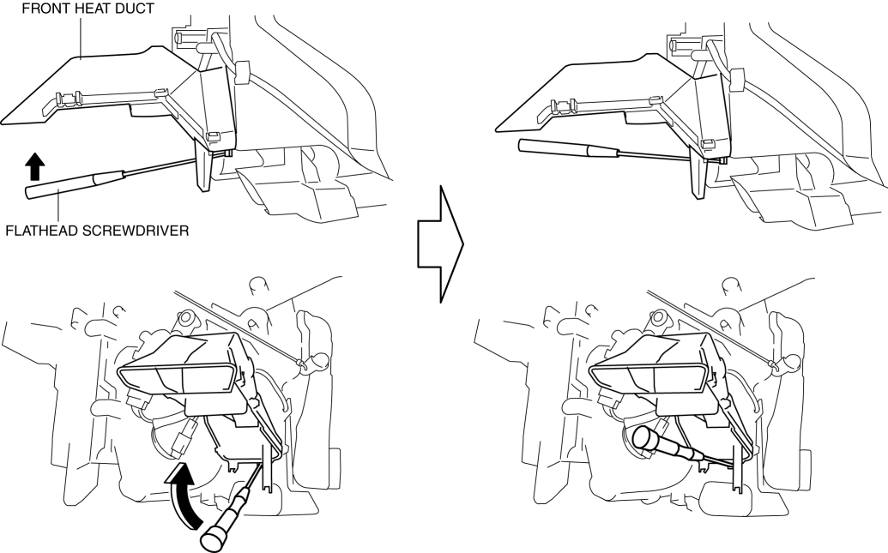
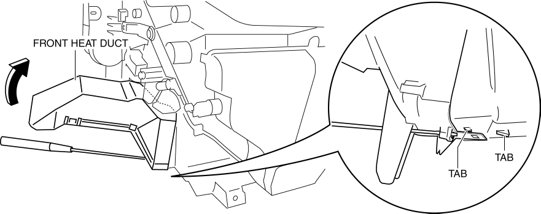
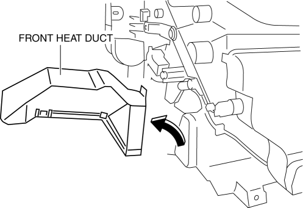
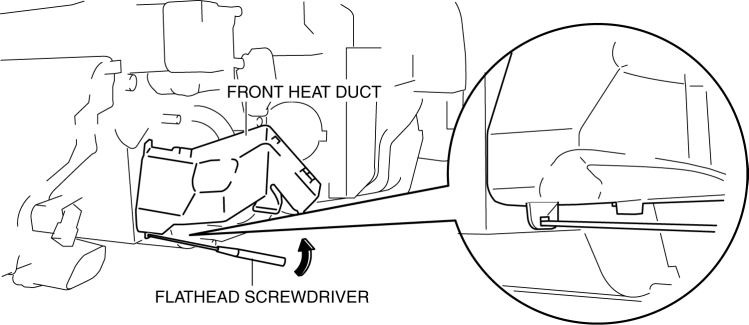
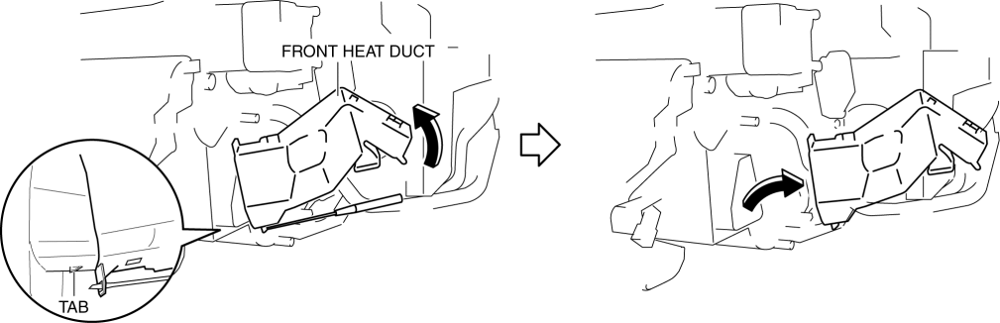

< Previous
Next >
2014 -
Mazda6 -
HVAC
FRONT HEAT DUCT REMOVAL/INSTALLATION
Driver-side
1. Remove the side wall (driver-side). (See SIDE WALL REMOVAL/INSTALLATION.)
2. Insert a flathead screwdriver in the position shown in the figure, lift it up in the direction of the arrow.

3. Detach the tab while lifting up the front heat duct in the direction of the arrow.

4. Remove the front heat duct.

5. Install in the reverse order of removal.
Passenger-side
1. Remove the following parts: a. Dashboard under cover (See DASHBOARD UNDER COVER REMOVAL/INSTALLATION.)
b. Side wall (passenger-side) (See SIDE WALL REMOVAL/INSTALLATION.)
2. Insert a flathead screwdriver in the position shown in the figure, lift it up in the direction of the arrow.

3. Detach the tab while lifting up the front heat duct in the direction of the arrow.

4. Remove the front heat duct.
5. Install in the reverse order of removal.
< Previous
Next >
© 2012 Mazda North American Operations, U.S.A.